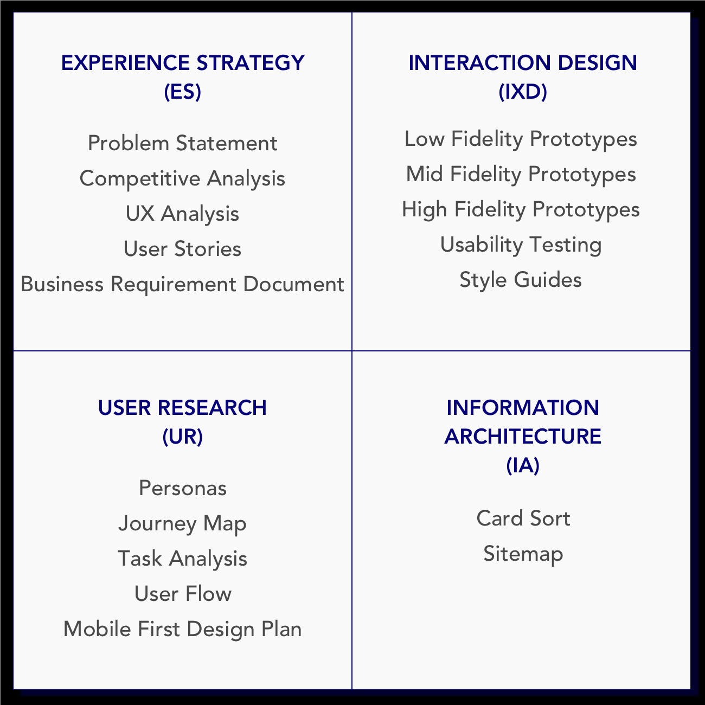
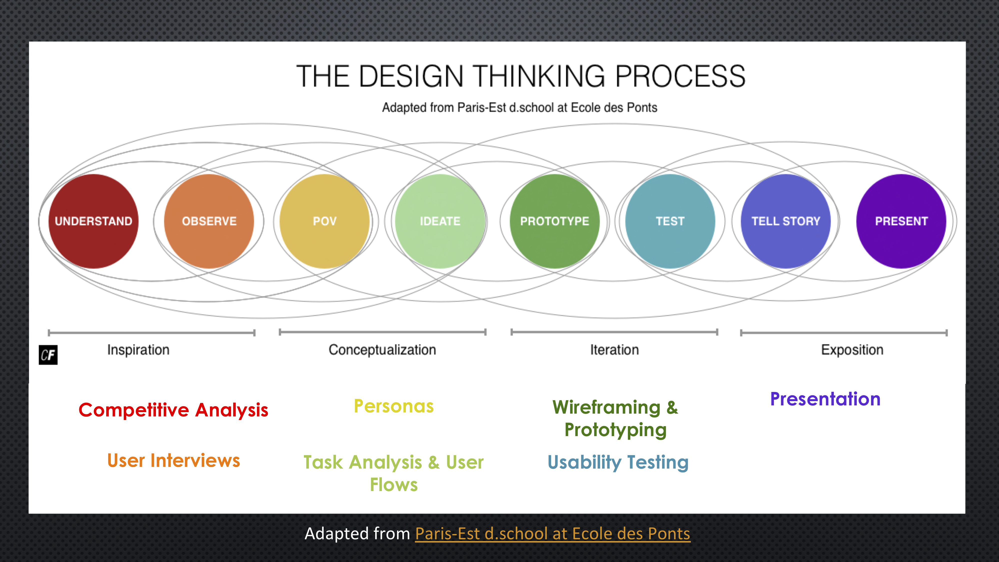

COMPLETE UX PROCESS:
MOBILE FIRST
InkTank is a one-stop tattoo application that takes users through the journey of getting a tattoo from finding their tattoo designs all the way to booking their initial tattoo consultation.
The Problem
After doing a competitive analysis and user interviews, I discovered that users need a one stop all encompassing application that takes users throught the journey of getting a tattoo (from inspiration to booking an appointment). Users want a way to be fully informed and a way to express themselves without any future regrets. That's how InkTank was born!
1 Minute Promo Video
Features for Initial Release
- Tutorial/Onboarding
- Login/Sign-Up
- Search Tattoo, Designs, Artists with Filters
- Edit, Test, Save, and Share Designs
- Test Designs on Your Body (Augmented Reality)
- Favorite Tattoo, Designs, Artists
- Read and Write Reviews
Features for Future Release
Articles and Blog Posts; Scheduling Appointments; Pay for Your Tattoo; Messaging Platform; First Tattoo Corner; Upload/Edit Tattoo
Process Overview
For the InkTank Mobile First Application, I incorporated the UX Design Thinking Process: Inspiration, Conceptualization, Iteration, Exposition. My process also included all 4 areas of User Experience as defined by the Quadrant Model:
 Image Caption: All the deliverables

Experience Strategy
In the experience strategy portion, my main focus was on comprehensively understanding the problem. Once I formulated my problem statement, I completed a competitive analysis on 2 of the leading tattoo applications on the market: Tatoodo & Inkhunter.
Researching what my competitors were doing well and what they were doing poorly, allowed me to create a list of key features that would set InkTank apart from it's competitors. Once I compiled my findings and analysis into a Business Requirement Document (BRD), I went on to create my user stories.
KEY DELIVERABLES:
Problem Statement, Competitive Analysis, UX Analysis, Business Requirement Document, User Stories


User Research
In the user research portion, my main focus was to understand the users of the InkTank Application. I started off by conducting user interviews on a variety of tattoo enthusiasts between the ages of 18 to 40 who either have tattoos or want to get their first.
Conducting user interviews allowed me to delve deeper into understanding the users' wants, needs, motivations, and pain points. Utilizing my user interview findings, I was able to create 3 Personas. Each persona had their own Journey Map, Task Analysis, and User Flow.
KEY DELIVERABLES:
User Interviews, Personas, Journey Maps, Task Analysis, User Flows


Information Architecture
In the information architecture portion, my main focus was to take what I learned from my user research and create the basic structure and organization of content for my application.
In order to understand how users would organize the content on the InkTank application, I conducted a digital open cart sort using OptimalSort. The results helped me understand how my users would navigate the application, which led to me modify my initial sitemap.
KEY DELIVERABLES:
Card Sort, Site Map


Interaction Design
With a user centered sitemap in hand, I began to list out the key features I would focus on for the first release. This allowed me to narrow down some key tasks my users would eventually complete for my usability tests.
I started off by hand drawing low fidelity mobile and desktop prototypes that not only showed the layout, but also explained the interactions. I then iterated on my designs and used Flinto and Balsamiq to create my mid-fidelity prototypes. After that, I went on to create my high-fidelty InkTank Desktop and InkTank Mobile prototypes using Sketch and Invision.
My usability tests gave me tremendous insights into what my users loved about the application as well as where they struggled most. This helped me discover what changes needed to be implemented in the next iteration to improve usability.
KEY DELIVERABLES:
Low-Fidelity Prototypes, Mid-Fidelity Prototypes, High-Fidelity Prototypes, Design Style Guides


Usability Testing: Usability testing helped me understand what my users love and hate about the InkTank mobile and desktop application. It gave me valuable information on where users struggled and what areas needed to be improved to create a better user experience. I was able to take the results and make changes to the initial prototype for the second iteration.
Lessons Learned
One of the most significant lessons I learned during this project was the importance of including users throughout the entire design process - user interviews, card sorting, and usability testing. A lot of times, as UX designers, we are so engrossed in designing our products that what we think makes sense may not always make sense to users. My card sort and usability testing gave me valuable insight into how I could make my application better and improve the experience for users.